I build systems at the intersection of teleoperation, haptics, and human motor control — robots that transfer human skill, replicate physical compliance, and extend the body's reach. Currently leading robotics and vision research at Keio University KMD and contributing to Japan's JST Moonshot Avatar program.
Ten projects across teleoperation, haptics, human motor learning, medical robotics, soft robotics, extended reality, and embodied systems — plus a running log of work in progress. Click any tile to open the full project page.
I am a French robotics researcher based in Tokyo. I currently serve as Project Assistant Professor at the Embodied Media Project, Keio University Graduate School of Media Design (KMD), where I lead the Robotics and Vision Augmentation team under Prof. Kouta Minamizawa. I am also a Guest Researcher at Waseda University's Iwata Laboratory.
My research addresses physical human–robot interaction: developing systems that enable robots to understand and replicate human motor intent — not just trajectories, but dynamic compliance, force profiles, and embodied skill. Three threads define my work: impedance-aware teleoperation, wearable supernumerary robotics, and AI-driven accessibility.
I hold a PhD from the University of Montpellier / LIRMM-CNRS (2022), funded by the JST ERATO Jizai Body project. Before Keio, I was a permanent researcher at Honda Research Institute Japan (Avatar Project, 2025) and Research Associate at Waseda University Iwata Lab (2023–2025). Full bio, awards & languages ↗
Recent news, talks, publications, and deployments.
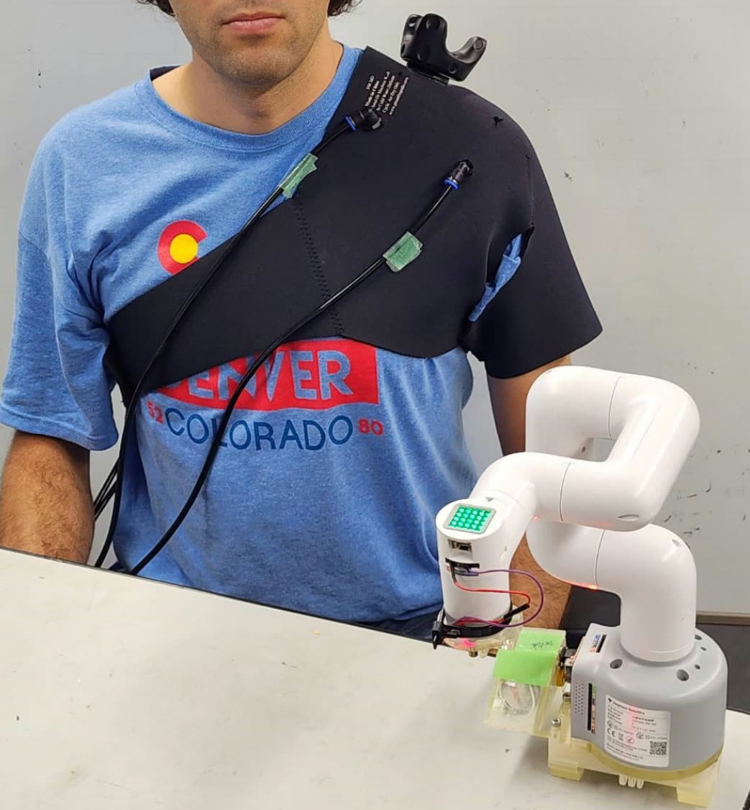
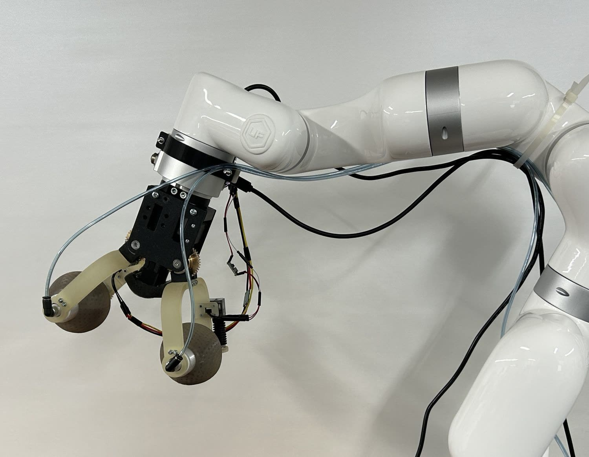
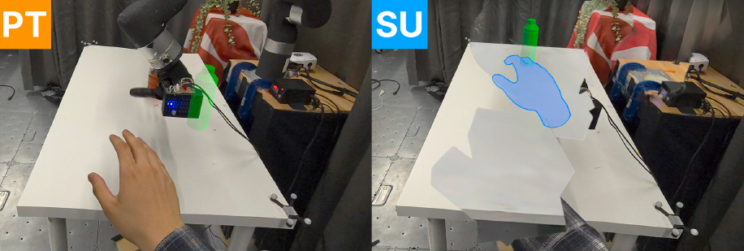
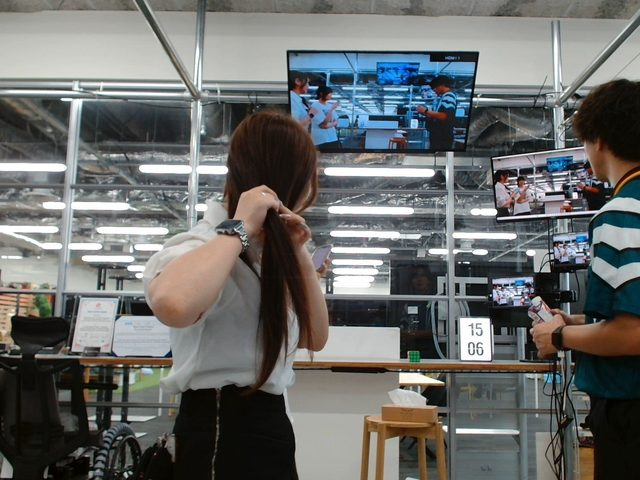
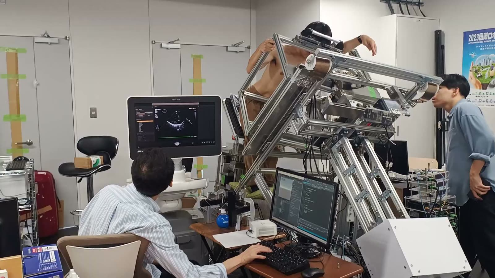
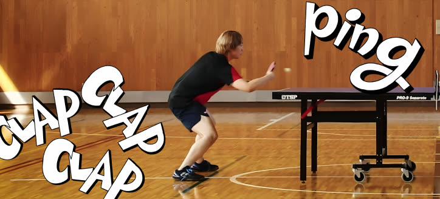
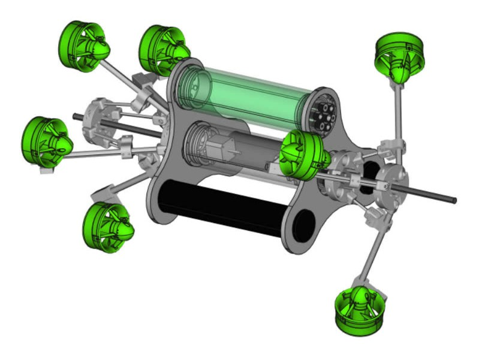
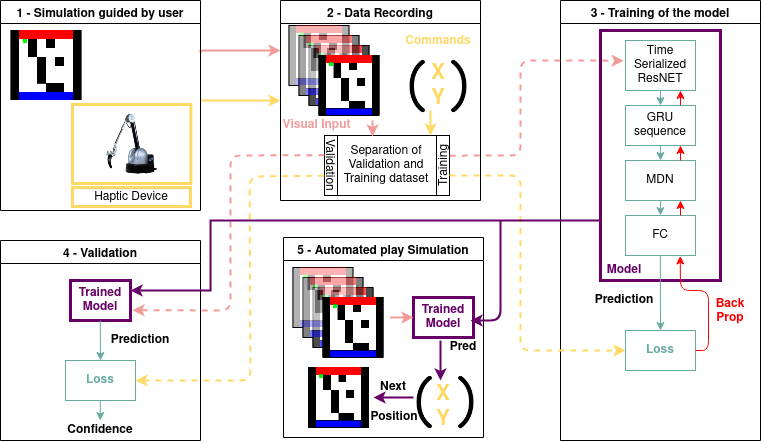
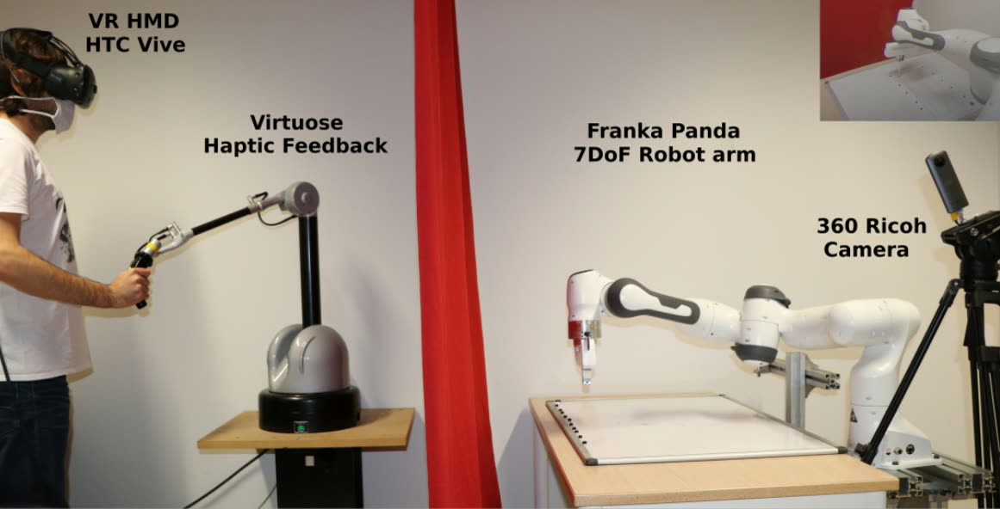
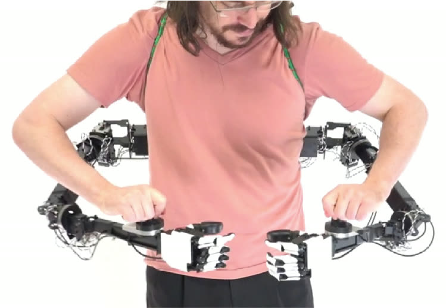
Recent experiments, demos, and work-in-progress footage from the lab. Click a card to play.
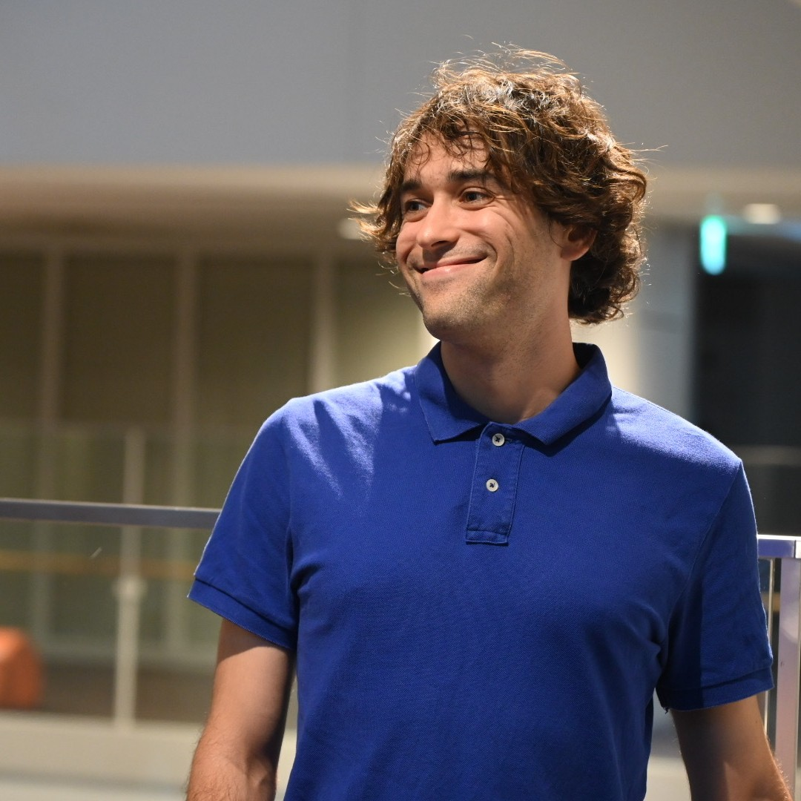